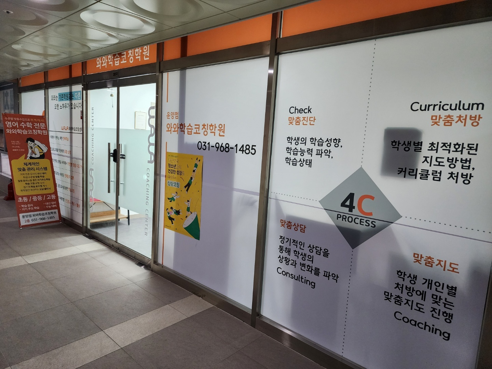
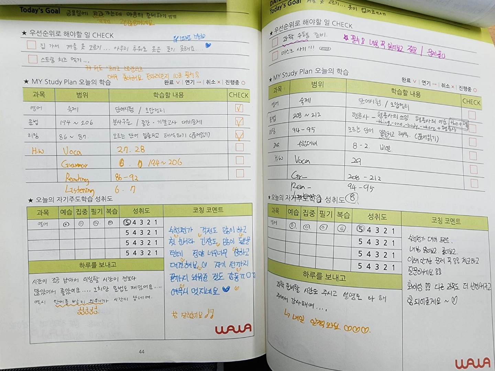
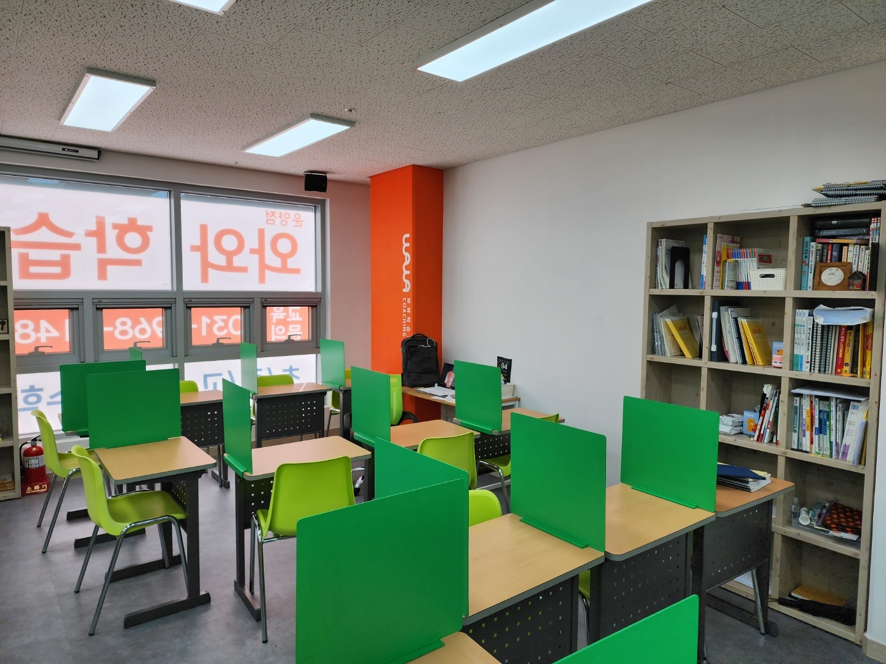

안녕하세요, 경기 김포시 운양동의 와와학습코칭 운양점입니다. 김포한강11로에서 상가 2층 복도로 들어오시면, 유리문에 닿기 전에 먼저 흰 벽 한 면을 지나게 됩니다. 이 벽에 저희가 아이를 어떻게 보는지가 네 칸으로 적혀 있습니다. 학습 성향과 상태를 확인하고, 아이별로 처방을 짜고, 그 처방대로 지도하고, 정기적으로 상담으로 되돌아보는 순서입니다.
이 네 칸을 굳이 복도 쪽 벽에 크게 붙여 둔 이유가 있습니다. 상담을 오신 부모님께 같은 말을 말로만 드리면 다 비슷하게 들리기 때문입니다. 오늘 글에서는 이 중에서도 가장 눈에 안 보이는 칸, 그러니까 수업이 끝난 뒤에 벌어지는 일을 사진으로 보여 드리려고 합니다.

플래너의 오른쪽 절반은 아이가 쓰지 않습니다
사진은 운양점 아이들이 매일 쓰는 학습 플래너입니다. 왼쪽 위는 아이가 직접 적습니다. 오늘 할 일, 과목과 범위, 무엇을 할지. 사진 속 아이는 영어 숙제로 단어 시험과 오답 정리, 문법 194~206쪽, 리딩 86~87쪽을 적어 두고, 끝낸 것에 체크를 해 두었습니다.
플래너를 쓰게 하는 학원은 많습니다. 문제는 대부분 여기서 끝난다는 점입니다. 아이는 쓰고, 선생님은 확인 도장을 찍습니다. 그러면 플래너는 숙제 검사 종이가 되고, 두 달쯤 지나면 아이가 대충 적기 시작합니다. 안 볼 걸 아니까요.
운양점 플래너에서 진짜 중요한 칸은 오른쪽 아래 코칭 코멘트 자리입니다. 이 칸은 아이가 쓰지 않습니다. 그날 수업을 본 코치가 손으로 채웁니다. 사진의 두 장에 적힌 말은 이런 것들입니다. 수행평가를 앞두고 긴장한 아이에게는 "걱정도 많이 하고 긴장도 많이 됐을 텐데 정말 열심히 대견해요", 진도를 놓친 날에는 "이런 유형 문제 꼭 한 번 더 점검하고 질문하세요"처럼요.
왼쪽 아래 하루를 보내고 칸에는 아이가 남긴 말이 적혀 있습니다. "시간이 조금 남아서 리딩할 시간이 전보다 많았어요", "단어를 빨리 외우니까 시간이 남네요". 이렇게 아이가 쓴 한 줄에 코치가 한 줄로 답하는 구조라서, 플래너가 검사지가 아니라 주고받는 기록이 됩니다. 답장이 돌아오는 걸 아는 아이는 대충 쓰지 않습니다.
"열심히 했어요" 대신 어디가 흔들렸는지를 적습니다
코칭 코멘트를 쓸 때 운양점이 지키는 원칙이 하나 있습니다. 칭찬만 적지 않는 것입니다. 플래너 왼쪽에는 과목별로 예습·집중·필기·복습과 성취도를 표시하는 칸이 따로 있습니다. 같은 "영어 1시간"이라도 어느 칸이 비었는지가 아이마다 다릅니다.
- 집중은 되는데 복습이 비는 아이 — 수업 시간엔 잘 따라오는데 다음 주에 같은 걸 또 묻습니다. 이런 아이에게는 진도를 빼지 않고 지난주 것부터 다시 꺼냅니다.
- 필기는 빽빽한데 성취도가 낮은 아이 — 받아 적는 데 힘을 다 씁니다. 필기를 줄이고 덮고 말해 보는 시간을 넣습니다.
- 다 했는데 시험만 보면 무너지는 아이 — 집에서 답지를 옆에 두고 푼 경우가 많습니다. 센터에서 시간을 재고 다시 풀게 합니다.
이 판단은 점수만 봐서는 나오지 않습니다. 매일 한 장씩 쌓인 플래너를 넘겨 보면 같은 자리에서 반복해 미끄러지는 지점이 눈에 보입니다. 정기 상담 때 부모님께 보여 드리는 것도 성적표가 아니라 이 플래너 묶음입니다.

가림판은 막으려고 세운 것이 아닙니다
학습실은 창이 넓어 낮에도 형광등에만 기대지 않습니다. 책상마다 초록 가림판이 세워져 있는데, 이걸 두고 "답답하지 않냐"고 물으시는 분들이 계십니다. 가림판의 목적은 아이를 가두는 것이 아니라 시야에서 딴 사람을 지우는 것입니다.
중·고등 아이가 자습을 시작해 놓고 흐트러지는 계기는 대개 옆자리입니다. 누가 일어나고, 누가 물을 마시러 가고, 누가 벌써 다음 단원을 펴면 그때마다 눈이 따라갑니다. 가림판 하나를 세우면 그 흔들림이 눈에 띄게 줄어듭니다. 대신 가림판은 앉은 아이의 어깨 높이까지만 옵니다. 코치가 지나가며 진행 상황을 볼 수 있고, 아이도 손을 들지 않고 고개만 들어 부를 수 있는 높이입니다.
벽면 책장에는 학년별 교재와 문제집이 꽂혀 있습니다. 오늘 플래너에 적은 범위를 풀다가 앞 단원이 막히면 그 자리에서 아래 학년 교재를 꺼내 보게 합니다. 모르는 채로 밀고 나가는 것보다, 한 단계 내려갔다 오는 편이 결국 빠릅니다.
운양동은 초·중·고가 한 동네 안에서 이어집니다
운양점 주변은 김포한강신도시 안에서도 학교가 한 생활권에 모여 있는 동네입니다. 초등학교는 하늘빛초·청수초·운양초, 중학교는 하늘빛중·운양중·푸른솔중, 고등학교는 제일고·운양고·운유고가 있습니다. 아이가 초등부터 고등까지 이사 없이 같은 동네에서 다니는 경우가 흔합니다.
이게 학습 관리에서 뜻하는 바가 있습니다. 중학교에서 만든 습관이 그대로 고등학교까지 따라간다는 것입니다. 학교가 바뀌면서 새로 시작할 기회가 없습니다. 그래서 운양점은 학년별로 챙기는 지점을 나눠 둡니다.
- 초등 고학년 — 진도보다 플래너를 스스로 채우는 연습이 먼저입니다. 처음엔 코치가 같이 적고, 몇 달 뒤엔 혼자 적게 합니다.
- 중등 — 시험 범위가 공지된 뒤에 움직이면 늦습니다. 단원이 끝날 때마다 확인하고 넘어가는 방식으로 평소에 나눠 쌓습니다.
- 고등 — 지필만 준비하면 안 됩니다. 영어는 수행평가와 지필이 같은 학기에 겹치고, 수행 준비에 밀려 문법·독해가 통째로 비는 주가 생깁니다. 플래너에 수행 일정까지 같이 적게 하는 이유입니다.
특히 고등 영어에서 자주 보이는 장면이 있습니다. 수행평가 준비 기간에 2주치 문법이 통으로 비는 것입니다. 사진 속 플래너처럼 숙제·문법·리딩을 한 줄씩 나눠 적어 두면, 바쁜 주에도 어느 칸이 비었는지가 눈에 보입니다. 그 주가 지난 뒤 무엇부터 메워야 하는지도 함께 보입니다.
운양점 찾아오시는 길
와와학습코칭 운양점은 경기 김포시 김포한강11로 288-37, 헤리움리버테라스 205호에 있습니다. 상가 2층이라 아이 혼자 오갈 수 있고, 복도로 들어오시면 4C가 적힌 흰 벽 끝에 유리문이 있습니다.
학습 진단과 상담은 무료입니다. 아이와 함께 오셔도 되고, 부모님만 먼저 오셔서 이야기를 나누셔도 됩니다. 초등 고학년부터 중·고등까지 영어·수학을 중심으로 관리합니다.
"플래너를 쓰긴 쓰는데 아무 소용이 없더라"는 말씀을 하신 적이 있다면, 한 번 오셔서 코칭 코멘트가 적힌 플래너부터 넘겨 보고 가셔도 좋겠습니다.